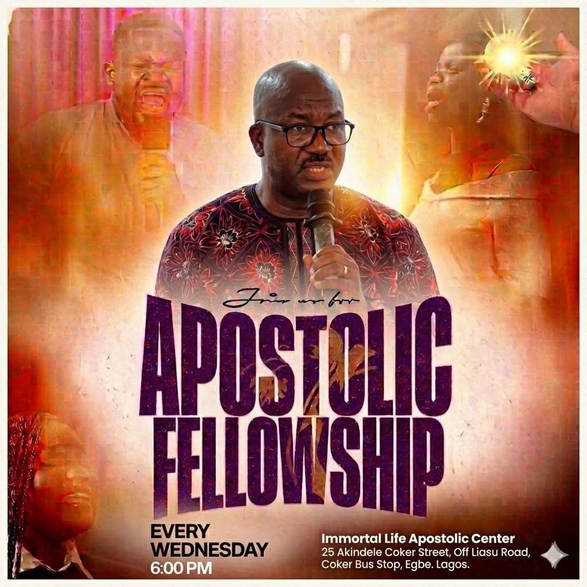

Worship
Encounter God through worship, prayer, and prophetic encouragement designed to ignite personal renewal and communal awakening.
Leadership and Transformation.
Leading people into deeper worship, biblical truth, and purposeful living through passionate teaching, prophetic ministry, and community care.
1 Corinthians 12:1 – “Now concerning spiritual gifts, brethren, I do not want you to be ignorant.”
.jpg)
Apostle David Majasan
Apostolic leader
“ Empowered by the Spirit, and called to serve with love. Every believer is invited to walk in purpose and witness supernatural change.”
Explore TeachingsApostle David Majasan is a respected ministry leader with a heart for revival, discipleship, and kingdom expansion. His ministry bridges scriptural depth with relevant teaching designed to empower believers in every generation.
With decades of experience in pastoral care, prophetic ministry, and church planting, Apostle Majasan inspires nations to embrace hope, healing, and holy living through the power of Jesus Christ.
Years of ministry
Teaching engagements
Planting and leadership
Encounter God through worship, prayer, and prophetic encouragement designed to ignite personal renewal and communal awakening.
Equip emerging leaders with biblical principles, practical mentoring, and apostolic guidance for effective ministry influence.
Support people in need through compassionate outreach, practical support, and relationship-building with Christ-centered care.

Teaching that helps believers recognize and activate their spiritual gifts, calling, and destiny in Christ.
Practical biblical guidance for building strong, Christ-centered families and lasting marital unity.
Foundational apostolic teaching that equips the church to embrace mission, authority, and maturity in the faith.
Intentional discipleship for spiritual growth, accountability, and life-changing transformation in daily living.
Join a movement of believers committed to spiritual growth, outreach, and kingdom advancement in every sphere of society.
If you would like to invite Apostle Majasan to speak, partner in prayer, or learn more about upcoming events, please reach out below.